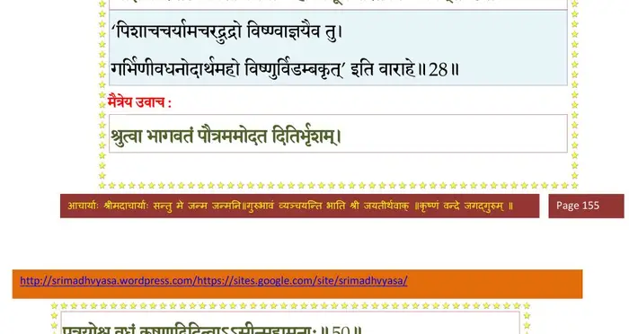
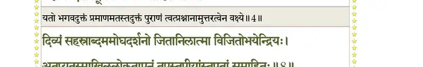
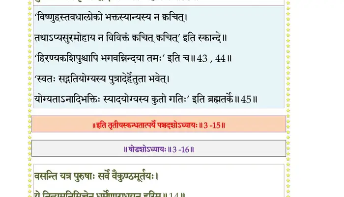

स्कन्ध 3 · अध्याय 15
श्लोक १
शुक उवाच–
निशम्य कौशारविणोपवर्णितां हरेः कथां कारणसूकरात्मनः ।
पुनः स पप््राच्छ समुद्यताञ्जलिर्न चातितृप्तो विदुरो धृतव्रतः।। १ ।।
निशम्य कौशारविणोपवर्णितां हरेः कथां कारणसूकरात्मनः ।
पुनः स पप््राच्छ समुद्यताञ्जलिर्न चातितृप्तो विदुरो धृतव्रतः।। १ ।।
श्लोक २
विदुर उवाच–
तेनैव च मुनिश्रेष्ठ हरिणा यज्ञमूर्तिना ।
आदिदैत्यो हिरण्याक्षो हत इत्यनुशुश्रुम।। २ ।।
तेनैव च मुनिश्रेष्ठ हरिणा यज्ञमूर्तिना ।
आदिदैत्यो हिरण्याक्षो हत इत्यनुशुश्रुम।। २ ।।
श्लोक ३
तस्य चोद्धरतः क्षोणीं स्वदंष्ट्राग्रेण लीलया ।
दैत्यराजस्य च ब्रह्मन् कस्माद्धेतोरभून्मृधः।। ३ ।।
दैत्यराजस्य च ब्रह्मन् कस्माद्धेतोरभून्मृधः।। ३ ।।
श्लोक ४
मैत्रेय उवाच–
साधु वीर त्वया पृष्टमवतारकथां हरेः ।
यत् त्वं पृच्छसि मर्त्यानां मृत्युपाशविशातनीम्।। ४ ।।
साधु वीर त्वया पृष्टमवतारकथां हरेः ।
यत् त्वं पृच्छसि मर्त्यानां मृत्युपाशविशातनीम्।। ४ ।।
श्लोक ५
ययोत्तानपदः पुत्रो मुनिना गीतयाऽर्भकः ।
मृत्योः कृत्वेह मूध््नर्यङ्घ्रिमारुरोह हरेः पदम्।। ५ ।।
मृत्योः कृत्वेह मूध््नर्यङ्घ्रिमारुरोह हरेः पदम्।। ५ ।।
श्लोक ६
अथात्रापीतिहासोऽयं श्रुतो मे वर्णितः पुरा ।
ब्रह्मणा देवदेवेन देवानामनुपृच्छताम्।। ६ ।।
ब्रह्मणा देवदेवेन देवानामनुपृच्छताम्।। ६ ।।
श्लोक ७
दितिर्दाक्षायणी क्षत्तर्मारीचं कश्यपं पतिम् ।
अपत्यकामा चकमे सन्ध्यायां हृच्छयार्दिता।। ७ ।।
अपत्यकामा चकमे सन्ध्यायां हृच्छयार्दिता।। ७ ।।
श्लोक ८
इष्ट्वाऽग्निजिह्वं पयसा पुरुषं यजुषां पतिम् ।
निम्लोचत्यर्क आसीनमग्न्यागारे समाहितम्।। ८ ।।
निम्लोचत्यर्क आसीनमग्न्यागारे समाहितम्।। ८ ।।
श्लोक ९
दितिरुवाच–
एष मां त्वत्कृते विद्वन् काम आत्तशरासनः ।
दुनोति दीनां विक्रम्य रम्भामिव मतङ्गजः।। ९ ।।
एष मां त्वत्कृते विद्वन् काम आत्तशरासनः ।
दुनोति दीनां विक्रम्य रम्भामिव मतङ्गजः।। ९ ।।
श्लोक १०
तद् भवान् दह्यमानायां सपत्नीनां समृद्धिभिः ।
प््राजावतीनां भद्रं ते मय्यायुङ्क्तामनुग्रहम्।। १० ।।
प््राजावतीनां भद्रं ते मय्यायुङ्क्तामनुग्रहम्।। १० ।।
श्लोक ११
भर्तर्याप्तोरुमानानां लोकानाविशते यशः ।
पतिर्भवद्विधो यासां प््राजया ननु जायते।। ११ ।।
पतिर्भवद्विधो यासां प््राजया ननु जायते।। ११ ।।
श्लोक १२
पुरा पिता नो भगवान् दक्षो दुहितृवत्सलः ।
कं वृणीत वरं वत्सा इत्यपृच्छत नः पृथक्।। १२ ।।
कं वृणीत वरं वत्सा इत्यपृच्छत नः पृथक्।। १२ ।।
श्लोक १३
स विदित्वाऽऽत्मजानां नो भावं सन्तानभावनः ।
त्रयोदशाददात् तासां यास्ते शीलमनुव्रताः।। १३ ।।
त्रयोदशाददात् तासां यास्ते शीलमनुव्रताः।। १३ ।।
श्लोक १४
अथ मे कुरु कल्याण कामं कञ्जविलोचन ।
आप्तोपसर्पणं भूमन्नमोघं हि महीयसि।। १४ ।।
आप्तोपसर्पणं भूमन्नमोघं हि महीयसि।। १४ ।।
श्लोक १५
मैत्रेय उवाच–
इति तां वीर मारीचः कृपणां बहुभाषिणीम् ।
प््रात्याहानुनयन् वाचा प््रावृद्धानङ्गकश्मलाम्।। १५ ।।
इति तां वीर मारीचः कृपणां बहुभाषिणीम् ।
प््रात्याहानुनयन् वाचा प््रावृद्धानङ्गकश्मलाम्।। १५ ।।
श्लोक १६
एष तेऽहं विधास्यामि प््रिायं भीरु यदिच्छसि ।
तस्याः कामं न कः कुर्यात् सिद्धिस्त्रैवर्गिकी यतः।। १६ ।।
तस्याः कामं न कः कुर्यात् सिद्धिस्त्रैवर्गिकी यतः।। १६ ।।
श्लोक १७
सर्वाश्रमानुपादाय स्वाश्रमेण कलत्रवान् ।
व्यसनार्णवमत्येति जलयानैर्यथार्णवम्।। १७ ।।
व्यसनार्णवमत्येति जलयानैर्यथार्णवम्।। १७ ।।
श्लोक १८
यामाहुरात्मनो ह्यर्धं श्रेयस्कामस्य भामिनि ।
यस्यां स्वधुरमध्यस्य पुमांश्चरति विज्वरः।। १८ ।।
यस्यां स्वधुरमध्यस्य पुमांश्चरति विज्वरः।। १८ ।।
श्लोक १९
यामाश्रित्येन्द्रियारातीन् दुर्जयानितराश्रमैः ।
वयं जयेम हेलाभिर्दस्यून् दुर्गपतिर्यथा।। १९ ।।
वयं जयेम हेलाभिर्दस्यून् दुर्गपतिर्यथा।। १९ ।।
श्लोक २०
न वयं प््राभवस्तां त्वामनुकर्तुं गृहेश्वरि ।
अप्यायुषा वा कार्त्स्न्येन ये चान्ये गुणगृध्रवः।। २० ।।
अप्यायुषा वा कार्त्स्न्येन ये चान्ये गुणगृध्रवः।। २० ।।
श्लोक २१
अथाऽपि काममेनं ते प््राजायै करवाण्यलम् ।
यथा मां नातिवाचन्ति मूहूर्तं प््रातिपालय।। २१ ।।
यथा मां नातिवाचन्ति मूहूर्तं प््रातिपालय।। २१ ।।
श्लोक २२
एषा घोरतमा वेला घोराणां घोरदर्शना ।
चरन्ति यस्यां भूतानि भूतेशानुचराणि ह।। २२ ।।
चरन्ति यस्यां भूतानि भूतेशानुचराणि ह।। २२ ।।
श्लोक २३
एतस्यां साध्वि सन्ध्यायां भगवान् भूतभावनः ।
परीतो भूतपार्षद्भिर्वृषेणाटति भूतराट्।। २३ ।।
परीतो भूतपार्षद्भिर्वृषेणाटति भूतराट्।। २३ ।।
श्लोक २४
श्मशानचक्रानिलधूलिधूम्रविकीर्णविद्योतजटाकलापः ।
भस्मावकुण्ठामलरुक्मदेहो देवस्त्रिभिः पश्यति देवरस्ते।। २४ ।।
भस्मावकुण्ठामलरुक्मदेहो देवस्त्रिभिः पश्यति देवरस्ते।। २४ ।।
श्लोक २५
न यस्य लोके स्वजनः परो वा नात्यादृतो नोत कश्चिद्विगर्ह्यः ।
वयं व्रतैर्यच्चरणापविद्धामाशास्महेऽजां बत भुक्तभोगाम्।। २५ ।।
वयं व्रतैर्यच्चरणापविद्धामाशास्महेऽजां बत भुक्तभोगाम्।। २५ ।।
श्लोक २७
यस्यानवद्याचरितं मनीषिणो गृह्णन्त्यविद्यापटलं बिभित्सवः ।
निरस्तसाम्यातिशयो हरेः स्वयं पिशाचचर्यामचरत् सतां गतिः।।२६
हसन्ति यस्याचरितं हि दुर्भगाः स्वात्मन् रतस्याविदुषः समीहितम् ।
यैर्वस्त्रमाल्याभरणानुलेपनैः श्वभोजनं स्वात्मतयोपलालितम्।। २७ ।।
निरस्तसाम्यातिशयो हरेः स्वयं पिशाचचर्यामचरत् सतां गतिः।।२६
हसन्ति यस्याचरितं हि दुर्भगाः स्वात्मन् रतस्याविदुषः समीहितम् ।
यैर्वस्त्रमाल्याभरणानुलेपनैः श्वभोजनं स्वात्मतयोपलालितम्।। २७ ।।
श्लोक २८
ब्रह्मादयो यत्कृतसेतुपाला यत्कारणं विश्वमिदं हि मायया ।
आज्ञाकरी तस्य पिशाचचर्या अहो विभूम्नश्चरितं विडम्बनम्।।२८।।
आज्ञाकरी तस्य पिशाचचर्या अहो विभूम्नश्चरितं विडम्बनम्।।२८।।
भागवततात्पर्यनिर्णय

श्लोक २९
मैत्रेय उवाच–
एवं संवेदिता भर्त्रा मन्मथोन्मथितेन्द्रिया ।
जग्राह वासो ब्रह्मर्षेर्वृषलीव गतत्रपा।। २९ ।।
एवं संवेदिता भर्त्रा मन्मथोन्मथितेन्द्रिया ।
जग्राह वासो ब्रह्मर्षेर्वृषलीव गतत्रपा।। २९ ।।
भागवततात्पर्यनिर्णय

श्लोक ३०
संविदित्वाऽथ भार्यायास्तन्निर्बन्धं विकर्मणि ।
नत्वा दिष्टाय रहसि तया चोपविवेश ह।। ३० ।।
नत्वा दिष्टाय रहसि तया चोपविवेश ह।। ३० ।।
भागवततात्पर्यनिर्णय
श्लोक ३१
अथोपस्पृश्य सलिलं प््र•णानायम्य वाग्यतः ।
ध्यायन् जजाप विरजं ब्रह्म ज्योतिः सनातनम्।। ३१ ।।
ध्यायन् जजाप विरजं ब्रह्म ज्योतिः सनातनम्।। ३१ ।।
श्लोक ३२
दितिस्तु व्रीडिता तेन कर्मावद्येन भारत ।
उपसङ्गम्य विप््रार्षिमधोमुख्यभ्यभाषत।। ३२ ।।
उपसङ्गम्य विप््रार्षिमधोमुख्यभ्यभाषत।। ३२ ।।
श्लोक ३३
न मे गर्भमिमं ब्रह्मन् भूतानामृषभोऽवधीत् ।
रुद्रः पतिर्हि भूतानां यस्याकरवमंहसम्।। ३३ ।।
रुद्रः पतिर्हि भूतानां यस्याकरवमंहसम्।। ३३ ।।
श्लोक ३४
नमो रुद्राय महते देवायोग्राय मीढुषे ।
शिवाय न्यस्तदण्डाय धृतदण्डाय मन्यवे।। ३४ ।।
शिवाय न्यस्तदण्डाय धृतदण्डाय मन्यवे।। ३४ ।।
श्लोक ३५
स नः प््रासीदताद् भीमो भगवानुर्वनुग्रहः ।
व्याधस्याप्यानुकम्प्यानां स्त्रीणां देवः सतीपतिः।। ३५ ।।
व्याधस्याप्यानुकम्प्यानां स्त्रीणां देवः सतीपतिः।। ३५ ।।
श्लोक ३६
मैत्रेय उवाच–
स्वगर्भस्याशिषं लोक्यामाशासानां प््रावेपतीम् ।
निवृत्तसन्ध्यानियमो भार्यामाह प््राजापतिः।। ३६ ।।
स्वगर्भस्याशिषं लोक्यामाशासानां प््रावेपतीम् ।
निवृत्तसन्ध्यानियमो भार्यामाह प््राजापतिः।। ३६ ।।
श्लोक ३७
कश्यप उवाच–
अप््र•यत्यादात्मनस्ते दोषान्मौहूर्तिकादुत ।
मन्निर्देशातिचारेण देवानां चैव हेलनात्।। ३७ ।।
अप््र•यत्यादात्मनस्ते दोषान्मौहूर्तिकादुत ।
मन्निर्देशातिचारेण देवानां चैव हेलनात्।। ३७ ।।
श्लोक ३८
भविष्यतस्तवाभद्रावभद्रे जाठराधमौ ।
लोकान् सपालांस्त्रींश्चण्डि मुहुराक्रन्दयिष्यतः।। ३८ ।।
लोकान् सपालांस्त्रींश्चण्डि मुहुराक्रन्दयिष्यतः।। ३८ ।।
श्लोक ३९
प््र•णिनां हन्यमानानां दीनानामकृतागसाम् ।
स्त्रीणां निगृह्यमाणानां कोपितेषु महात्मसु।। ३९ ।।
स्त्रीणां निगृह्यमाणानां कोपितेषु महात्मसु।। ३९ ।।
श्लोक ४०
तदा विश्वेश्वरः क्रुद्धो भगवान् लोकभावनः ।
हनिष्यत्यवतीर्यासौ यथाऽद्रींश्छतपर्वधृक्।। ४० ।।
हनिष्यत्यवतीर्यासौ यथाऽद्रींश्छतपर्वधृक्।। ४० ।।
श्लोक ४१
दितिरुवाच–
वधं भगवता साक्षात् सुनाभोदारबाहुना ।
आशासे पुत्रयोर्मह्यं मा क्रुद्धाद् ब्राह्मणात् प््राभो।। ४१ ।।
वधं भगवता साक्षात् सुनाभोदारबाहुना ।
आशासे पुत्रयोर्मह्यं मा क्रुद्धाद् ब्राह्मणात् प््राभो।। ४१ ।।
श्लोक ४२
न ब्रह्मदण्डदग्धस्य न भूतभयदस्य च ।
नारक्यश्चानुगृह्णन्ति यां यां योनिमसौ गतः।। ४२ ।।
नारक्यश्चानुगृह्णन्ति यां यां योनिमसौ गतः।। ४२ ।।
श्लोक ४३
कश्यप उवाच–
कृतशोकानुतापेन सद्यः प््रात्यवमर्शनात् ।
भगवत्युरुमानाच्च भवे मय्यपि चादरात्।। ४३ ।।
कृतशोकानुतापेन सद्यः प््रात्यवमर्शनात् ।
भगवत्युरुमानाच्च भवे मय्यपि चादरात्।। ४३ ।।
श्लोक ४४
पुत्रस्यैव च पुत्राणां भवितैकः सतां मतः ।
गायन्ति यद् यशः शुद्धं भगवद्यशसा समम्।। ४४ ।।
गायन्ति यद् यशः शुद्धं भगवद्यशसा समम्।। ४४ ।।
श्लोक ४५
योगैर्हेमेव दुर्वर्णं भावयिष्यन्ति साधवः ।
निर्वैरादिभिरात्मानं यच्छीलमनुवर्तितुम्।। ४५ ।।
निर्वैरादिभिरात्मानं यच्छीलमनुवर्तितुम्।। ४५ ।।
श्लोक ४६
यत्प््रासादादिदं विश्वं प््रासीदति यदात्मकम् ।
शश्वद्दृक् भगवान् यस्य तोष्यतेऽनन्यया दृशा।। ४६ ।।
शश्वद्दृक् भगवान् यस्य तोष्यतेऽनन्यया दृशा।। ४६ ।।
श्लोक ४७
स वै महाभागवतो महात्मा महानुभावो महतां महिष्ठः ।
प््रावृद्धभक्त्या ह्यनुभाविताशये विवेश्य वैकुण्ठमतद् विहास्यति।।४७।।
प््रावृद्धभक्त्या ह्यनुभाविताशये विवेश्य वैकुण्ठमतद् विहास्यति।।४७।।
श्लोक ४८
अलम्पटः शीलधरो गुणाकरो हृष्टः परार्थे व्यथितेषु दुःखितः ।
अभूतशत्रुर्जगतः शोकहर्ता नैदाघिकं तापमिवोडुराजः।। ४८ ।।
अभूतशत्रुर्जगतः शोकहर्ता नैदाघिकं तापमिवोडुराजः।। ४८ ।।
श्लोक ४९
अन्तर्बहिश्चामलमब्जनेत्रं स्वपूरुषेच्छानुगृहीतरूपम् ।
पौत्रस्तव श्रीललनाललामं द्रष्टा स्फुरत्कुण्डलमण्डिताननम्।। ४९ ।।
पौत्रस्तव श्रीललनाललामं द्रष्टा स्फुरत्कुण्डलमण्डिताननम्।। ४९ ।।
श्लोक ५०
मैत्रेय उवाच–
श्रुत्वा भागवतं पौत्रममोदत दितिर्भृशम् ।
पुत्रयोश्च वधं कृष्णाद् विदित्वाऽऽसीन्महामनाः।। ५० ।।
श्रुत्वा भागवतं पौत्रममोदत दितिर्भृशम् ।
पुत्रयोश्च वधं कृष्णाद् विदित्वाऽऽसीन्महामनाः।। ५० ।।
भागवततात्पर्यनिर्णय

।। इति श्रीमद्भागवते तृतीयस्कन्धे पञ्चदशोऽध्यायः ।।